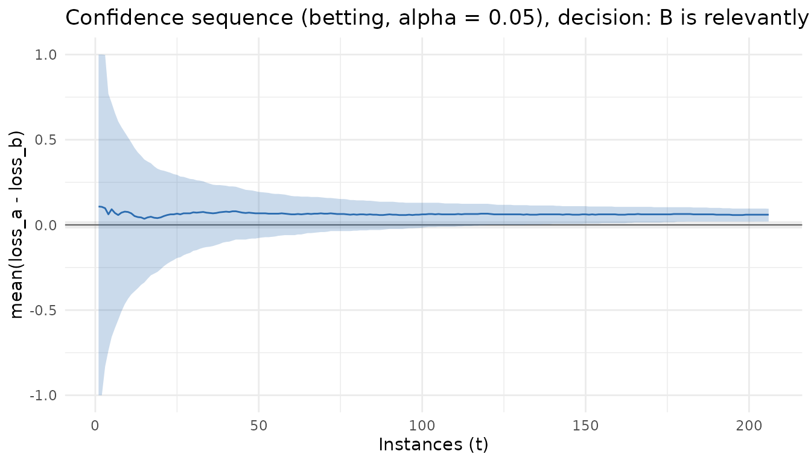

seqbench answers one question: when can I stop
comparing algorithm A with algorithm B without invalidating the
inference? It treats the benchmark as a sequential experiment on
paired losses (same instance, same seed) and maintains
a confidence sequence for the mean paired difference that stays valid
under optional stopping, repeated inspection and adaptive budgets. A
pre-registered margin of practical equivalence delta turns
the interval into one of three declarations, or a decision to continue,
or an inconclusive outcome when the budget runs out.
1. The design comes first
Everything the procedure needs is fixed before any losses are observed:
library(seqbench)
design <- comparison_design(
alpha = 0.05, # P(any false declaration, ever) <= alpha
margin = 0.02, # practical-equivalence margin delta, in loss units
bounds = c(0, 1), # known bounds of the losses of both algorithms
boundary = "betting", # Waudby-Smith & Ramdas (2024); the default
budget = 800, # total cost after which the outcome is "inconclusive"
cost_per_round = 1 # cost of one (instance, seed) evaluation of both algorithms
)
design
#>
#> ── seqbench comparison design ──────────────────────────────────────────────────
#> • Boundary: betting
#> • alpha = 0.05, margin = 0.02 (loss units)
#> • Loss bounds: [0, 1]; paired difference in [-1, 1]
#> • Budget: 800 cost units, n_max = unlimited instances, cost per round = 1The three hypotheses partition the line: A is relevantly better if
mu < -delta, B if mu > delta, and the
two are practically equivalent if |mu| <= delta, where
mu is the mean of loss_a - loss_b over the
population of instances. The margin is a domain decision, never tuned
after looking at data.
Before collecting anything you can ask how many instances a given distance to the threshold will need:
planning_horizon(design, distance = 0.05) # guaranteed (Hoeffding), very conservative
#> [1] 52296
planning_horizon(design, distance = 0.05, sd = 0.10) # variance-based approximation
#> [1] 640Typical stopping times are about half of these values.
2. Feeding paired losses
Instances are the sequential unit. Each row is one
(instance, seed) pair with the losses of both algorithms;
several seeds of the same instance are averaged into a single
observation. Here we simulate a population where
loss_a - loss_b has mean 0.05, i.e. A loses 0.05 more than
B on average, so B should be declared relevantly better:
set.seed(42)
simulate_batch <- function(instances, mu = 0.05, sd = 0.10) {
h <- sd * sqrt(3)
la <- runif(length(instances), 0.4, 0.8)
data.frame(instance = instances, seed = 1L,
loss_a = la, loss_b = la - mu + runif(length(instances), -h, h))
}
state <- initialize_comparison(design)
state <- update_comparison(state, simulate_batch(1:50))
state
#>
#> ── seqbench comparison ─────────────────────────────────────────────────────────
#> • Boundary betting, alpha = 0.05, margin = 0.02, bounds [0, 1]
#> • Instances: 50, evaluations: 50, cost: 50 / 800
#> • Estimate of mean(loss_a - loss_b): 0.068
#> • Confidence sequence (running intersection): [-0.07653, 0.1935]
#> • Decision: continue samplingUpdating is incremental. Feed more instances whenever they are available; the procedure stops at the first instance that produces a declaration and refuses data after that, because the pre-registered protocol ends there:
state <- update_comparison(state, simulate_batch(51:400))
#> Warning: Stopped at instance "206" (t = 206) with decision "B"; 194 later instances were
#> not consumed.
#> ℹ Under the pre-registered protocol the experiment ends here.
stopping_decision(state)
#> [1] "B"
#> attr(,"reason")
#> [1] "declaration"3. Reading the result
comparison_report() (or summary()) returns
the full contract: estimand, estimate, current confidence sequence, the
assumptions the guarantee relies on, diagnostics, stopping reason,
resources consumed, the instances and seeds in the order observed, and
versions.
comparison_report(state)
#>
#> ── seqbench report ─────────────────────────────────────────────────────────────
#> mu = E_P[ E_s[ loss_a(i, s) - loss_b(i, s) ] ], mean paired difference over the
#> instance population P
#> B is relevantly better (declaration)
#> 0.06; confidence sequence [0.02004, 0.09477] at alpha = 0.05, margin = 0.02
#> betting
#> 206 instances, 206 evaluations, cost 206
#> seqbench 0.1.0, R version 4.6.1 (2026-06-24)
#> Assumptions:
#>
#> • A1: instances are i.i.d. draws from the population P
#>
#> • A2: the number of seeds per instance is fixed before its losses are observed
#>
#> • A3: both losses lie in [0, 1]
#>
#> • A4: no instance is reused after its losses are observedThe trajectory is a tibble, one row per instance:
tidy(state)[c(1:3, nrow(tidy(state))), ]
#> # A tibble: 4 × 12
#> t instance n_seeds x estimate lower upper lower_running
#> <int> <chr> <int> <dbl> <dbl> <dbl> <dbl> <dbl>
#> 1 1 1 1 0.554 0.108 -1 1 -1
#> 2 2 2 1 0.552 0.106 -1 1 -1
#> 3 3 3 1 0.543 0.0980 -0.832 0.998 -0.832
#> 4 206 206 1 0.529 0.0600 0.0200 0.0948 0.0200
#> # ℹ 4 more variables: upper_running <dbl>, cost <dbl>, cost_cum <dbl>,
#> # decision <chr>
glance(state)
#> # A tibble: 1 × 12
#> boundary valid alpha margin n_instances n_evaluations cost estimate lower
#> <chr> <lgl> <dbl> <dbl> <int> <int> <dbl> <dbl> <dbl>
#> 1 betting TRUE 0.05 0.02 206 206 206 0.0600 0.0200
#> # ℹ 3 more variables: upper <dbl>, decision <chr>, stopping_reason <chr>and the confidence sequence can be plotted against the number of instances, with the equivalence band:
ggplot2::autoplot(state)
4. What the package refuses
The guarantee rests on four assumptions, and the package will not silently convert a violation into a valid-looking result:
fresh <- initialize_comparison(design)
update_comparison(fresh, data.frame(instance = 1, loss_a = 1.2, loss_b = 0.5)) # outside bounds
#> Error in `update_comparison()`:
#> ! 1 value of loss_a falls outside the declared bounds [0, 1] (row 1).
#> ℹ Losses are never clipped. Fix the data or declare wider bounds in
#> `comparison_design()`.
update_comparison(fresh, data.frame(instance = 1, loss_a = NA, loss_b = 0.5)) # missing
#> Error in `update_comparison()`:
#> ! Column loss_a must be numeric.Adding new seeds to an instance whose losses have already been seen
is adaptive reuse, not i.i.d. sampling, so it is an error too; plan all
seeds of an instance before observing any of them. Unpaired designs
(paired = FALSE) are not implemented and say so.
5. Inconclusive is an outcome
When the budget ends before a declaration, the result is
"inconclusive", reported with the final interval and the
reason. It is never turned into a decision:
tight <- comparison_design(alpha = 0.05, margin = 0.02, bounds = c(0, 1), n_max = 30)
st <- update_comparison(initialize_comparison(tight), simulate_batch(1:30, mu = 0.03))
stopping_decision(st)
#> [1] "inconclusive"
#> attr(,"reason")
#> [1] "n_max"6. Boundaries
| boundary | source | use |
|---|---|---|
"betting" |
hedged capital process, Waudby-Smith & Ramdas (2024) | default; tightest in the package’s experiments |
"empirical_bernstein" |
predictable-plug-in empirical Bernstein, same source | conservative reference |
"hoeffding" |
predictable-plug-in Hoeffding, same source | distribution-free reference; very conservative |
"naive_fixed" |
fixed-sample t interval recomputed at every step | invalid; negative control for experiments only |
All three valid boundaries assume bounded losses, i.i.d. instances,
seeds fixed before their losses are seen, and no instance reuse.
naive_fixed carries a valid = FALSE flag in
every output.